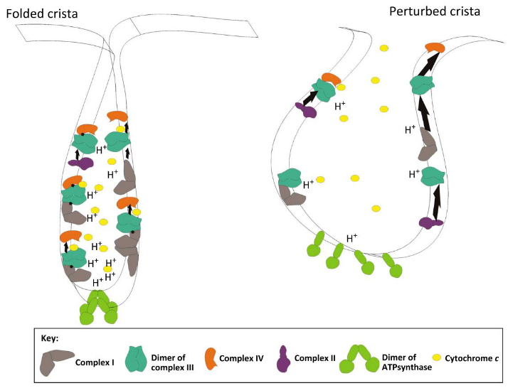
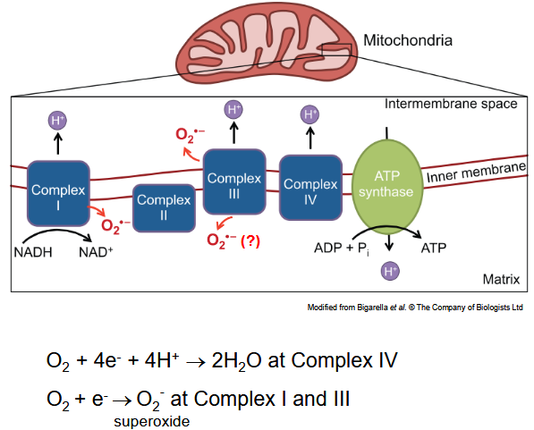

5 Mitochondria in Aging and Neurodegeneration
5.1 Mitochondria Structure and Function
The mitochondrion, often referred to as the “powerhouse of the cell,” is a complex organelle with a distinct structure that allows it to carry out essential cellular functions, particularly energy production through oxidative phosphorylation. Here’s an overview of its structure:
Matrix:
The matrix is the innermost compartment of the mitochondrion and contains a gel-like substance rich in enzymes, including those involved in the oxidation of pyruvate and fatty acids, as well as enzymes of the Krebs cycle (also known as the citric acid cycle or tricarboxylic acid cycle). Additionally, the matrix houses the mitochondrial DNA (mtDNA) and the machinery for gene expression, including RNA polymerase and ribosomes.
Inner Membrane:
The inner membrane surrounds the matrix and is highly folded into structures called cristae, which increase the surface area available for biochemical reactions. The inner membrane contains the electron transport chain (ETC), a series of protein complexes that transfer electrons derived from nutrients to generate ATP through oxidative phosphorylation. It also houses ATP synthase, an enzyme complex responsible for ATP production, as well as various transporters that regulate the passage of ions and metabolites across the membrane.
Outer Membrane:
The outer membrane surrounds the inner membrane and separates the mitochondrial interior from the cytoplasm. It is relatively permeable to small molecules with a molecular weight of less than 5 kilodaltons (kDa), allowing for the passage of ions, metabolites, and other small molecules.
Intermembrane Space:
The intermembrane space is the region between the inner and outer mitochondrial membranes. It contains a lower concentration of proteins compared to the matrix but may contain proteins involved in processes such as apoptosis regulation.
5.1.1 Energy-Converting Metabolism in Mitochondria
Energy-converting metabolism in mitochondria is a complex process that involves several interconnected pathways aimed at generating adenosine triphosphate (ATP), the cell’s primary energy currency. Mitochondria play a central role in cellular respiration, a process that involves the oxidation of nutrients to produce ATP through oxidative phosphorylation. Here’s an overview of the key metabolic pathways involved:
Glycolysis: Glycolysis is the initial stage of glucose metabolism that occurs in the cytoplasm. Glucose is broken down into pyruvate, producing a small amount of ATP and reducing equivalents in the form of NADH. Pyruvate is then transported into the mitochondria for further metabolism.
Pyruvate Oxidation: Pyruvate produced from glycolysis enters the mitochondria, where it undergoes oxidation to produce acetyl-CoA. This process generates reducing equivalents in the form of NADH and releases carbon dioxide. Acetyl-CoA then enters the citric acid cycle (also known as the Krebs cycle) for further metabolism.
Citric Acid Cycle (Krebs Cycle): The citric acid cycle takes place in the mitochondrial matrix. Acetyl-CoA combines with oxaloacetate to form citrate, which undergoes a series of enzymatic reactions, ultimately regenerating oxaloacetate and producing reducing equivalents (NADH and FADH2) and ATP precursors (GTP). The cycle generates NADH and FADH2, which donate electrons to the electron transport chain (ETC).
Electron Transport Chain (ETC): The electron transport chain is located in the inner mitochondrial membrane. It consists of a series of protein complexes (I-IV) and coenzyme Q and cytochrome c as electron carriers. As electrons move through the ETC, they release energy, which is used to pump protons (H+) across the inner mitochondrial membrane, establishing an electrochemical gradient.
ATP Synthesis: The proton gradient generated by the ETC drives ATP synthesis through ATP synthase, an enzyme complex located in the inner mitochondrial membrane. Protons flow back into the mitochondrial matrix through ATP synthase, driving the synthesis of ATP from adenosine diphosphate (ADP) and inorganic phosphate (Pi). This process is known as oxidative phosphorylation.
5.1.2 Glucose to NADH
Glucose undergoes several metabolic reactions to produce NADH during cellular respiration. The process begins with glycolysis, where glucose is converted into pyruvate. Here’s a simplified breakdown of the steps involved:
Glycolysis: Glucose (a 6-carbon molecule) is phosphorylated and split into two molecules of glyceraldehyde-3-phosphate (G3P), each containing three carbons. These G3P molecules are further oxidized and phosphorylated, ultimately yielding two molecules of pyruvate (a 3-carbon molecule). Along the way, glycolysis produces a net gain of 2 ATP molecules and 2 NADH molecules per glucose molecule.
Pyruvate Oxidation: Each pyruvate molecule produced during glycolysis enters the mitochondria, where it undergoes oxidation to produce acetyl-CoA. This process generates reducing equivalents in the form of NADH. While pyruvate oxidation does not directly produce NADH molecules, it generates NADH during subsequent steps of the citric acid cycle (Krebs cycle).
Krebs Cycle (Citric Acid Cycle): Acetyl-CoA combines with oxaloacetate to form citrate, initiating the citric acid cycle. Through a series of enzymatic reactions, citrate is metabolized, ultimately regenerating oxaloacetate and producing reducing equivalents (NADH and FADH2). While the precise contribution of each pyruvate to NADH production in the Krebs cycle varies, each glucose molecule ultimately yields multiple NADH molecules through this pathway.
5.1.2.1 NADH Usage

NADH (nicotinamide adenine dinucleotide, reduced form) is a critical molecule in cellular metabolism, serving as a carrier of electrons during various biochemical reactions. Its primary role is to transfer high-energy electrons to the electron transport chain (ETC) in the mitochondria, where they are ultimately used to generate ATP through oxidative phosphorylation.
Here’s how NADH is used in cellular metabolism:
Electron Transport Chain (ETC): NADH donates its electrons to complex I (NADH dehydrogenase) of the electron transport chain in the inner mitochondrial membrane. These electrons then pass through a series of protein complexes (I-IV), including flavin mononucleotide (FMN), iron-sulfur clusters, and cytochromes, leading to the pumping of protons (H+) from the mitochondrial matrix to the intermembrane space. This creates an electrochemical gradient across the inner mitochondrial membrane.
ATP Synthesis: The flow of protons back into the mitochondrial matrix through complex V (ATP synthase) harnesses the energy released to drive the synthesis of ATP from adenosine diphosphate (ADP) and inorganic phosphate (Pi). This process, known as oxidative phosphorylation, is responsible for the majority of ATP production in aerobic cells.
Regeneration of NAD+: After donating its electrons to the ETC, NADH is oxidized back to its original form, NAD+, allowing it to participate in subsequent rounds of metabolism. This regeneration of NAD+ is crucial for sustaining glycolysis, the citric acid cycle, and other metabolic pathways that rely on NAD+ as a cofactor.
5.1.3 Electron Transport Chain

The Electron Transport Chain (ETC) is a critical component of cellular respiration, occurring in the inner mitochondrial membrane of eukaryotic cells and the plasma membrane of prokaryotic cells. It is responsible for the final stage of oxidative phosphorylation, the process by which cells generate adenosine triphosphate (ATP), the primary energy currency.
Here’s how the Electron Transport Chain works:
Electron Carriers: The ETC consists of a series of protein complexes and small molecules that serve as electron carriers. These include flavoproteins, iron-sulfur proteins, cytochromes, and coenzyme Q (ubiquinone).
Electron Flow: Electrons donated by NADH and FADH2 (produced during glycolysis, pyruvate oxidation, and the citric acid cycle) enter the ETC at complex I (NADH dehydrogenase) and complex II (succinate dehydrogenase), respectively. These electrons are transferred sequentially from one carrier to another along the ETC, losing energy with each transfer.
Proton Pumping: As electrons flow through the ETC, energy released from their transfer is used to pump protons (H+) from the mitochondrial matrix to the intermembrane space, creating an electrochemical gradient across the inner mitochondrial membrane. Complexes I, III, and IV are involved in this process.
Chemiosmosis: The electrochemical gradient generated by proton pumping creates a proton motive force (PMF), which drives protons back into the mitochondrial matrix through complex V, also known as ATP synthase. As protons flow through ATP synthase, the energy released is used to convert adenosine diphosphate (ADP) and inorganic phosphate (Pi) into ATP, a process known as oxidative phosphorylation.
Oxygen as the Final Electron Acceptor: At the end of the ETC, electrons are transferred to molecular oxygen (O2), the final electron acceptor. Oxygen combines with protons to form water (H2O), completing the electron transport chain.
5.1.3.1 Alternative Pathways
In the Electron Transport Chain (ETC), there are two main pathways for the flow of electrons:
Complex I → Complex III → Complex IV: This pathway begins with complex I (NADH dehydrogenase) receiving electrons from NADH. Complex I transfers these electrons to coenzyme Q (ubiquinone), which then delivers them to complex III (cytochrome bc1 complex). Complex III passes the electrons to cytochrome c, and finally, they are transferred to complex IV (cytochrome c oxidase). Complex IV uses these electrons to reduce molecular oxygen (O2) to water (H2O).
Complex II → Complex III → Complex IV: This pathway involves complex II (succinate dehydrogenase) receiving electrons directly from succinate in the citric acid cycle. Complex II transfers these electrons to coenzyme Q, which then follows the same path as in the previous pathway, delivering the electrons to complex III and then complex IV for the reduction of oxygen to water.
5.1.4 Baffle versus Crista Junction Model
The Baffle Model and the Crista Junction Model are two proposed mechanisms that describe the organization of cristae, the internal membrane structures within mitochondria, and their role in mitochondrial function. Let’s delve into each model:
Baffle Model:
The Baffle Model suggests that cristae are formed by invaginations of the inner mitochondrial membrane (IMM) that protrude into the mitochondrial matrix. These invaginations create a labyrinth-like structure, increasing the surface area of the inner membrane and providing more space for oxidative phosphorylation (ATP production). The term “baffles” refers to the folds or ridges formed by these invaginations.
In this model, the cristae junctions, which are the points where the inner membrane folds connect to the outer membrane, are considered to be relatively sparse and randomly distributed. The spaces between cristae (intercristae spaces) are thought to allow for efficient diffusion of metabolites and ions, facilitating metabolic processes within the mitochondria.
Crista Junction Model:
The Crista Junction Model proposes a different organization of cristae within mitochondria. According to this model, cristae are interconnected by narrow tubular structures known as cristae junctions. These junctions serve as gateways that regulate the exchange of molecules between the intermembrane space and the mitochondrial matrix.
In the Crista Junction Model, the cristae are believed to be more tightly packed and organized compared to the Baffle Model. The presence of cristae junctions allows for compartmentalization of the inner mitochondrial membrane, segregating different metabolic processes and creating microenvironments within the mitochondria.
5.1.5 Electron Transport in the Cristae

The electron transport chain (ETC) in mitochondria is a crucial process in cellular respiration, where electrons derived from the oxidation of nutrients are passed along a series of protein complexes embedded in the inner mitochondrial membrane (IMM). This process generates a proton gradient across the membrane, which is used to produce adenosine triphosphate (ATP) through oxidative phosphorylation. Cristae, the inward-folded structures of the IMM, play a critical role in facilitating the ETC and ATP synthesis. Here’s how the ETC functions within the cristae:
Organization within Cristae: Cristae provide an extensive surface area for the assembly and functioning of the ETC complexes. The proteins comprising the ETC, including complex I (NADH dehydrogenase), complex II (succinate dehydrogenase), complex III (cytochrome bc1 complex), complex IV (cytochrome c oxidase), and ATP synthase (complex V), are embedded within the cristae membranes.
Electron Transfer: The ETC begins with the transfer of electrons from NADH or FADH2 to complex I or complex II, respectively. These electrons are then passed sequentially through the ETC complexes, with each complex accepting and donating electrons to the next in the chain. As electrons move along the chain, they release energy that is used to pump protons (H+) across the cristae membrane from the mitochondrial matrix to the intermembrane space.
Proton Gradient Formation: The pumping of protons from the mitochondrial matrix into the intermembrane space creates a proton gradient across the cristae membrane. This gradient represents stored energy that can be harnessed to drive ATP synthesis.
ATP Synthesis: The proton gradient established by the ETC drives the rotation of the rotor subunit within ATP synthase (complex V). This rotational motion catalyzes the synthesis of ATP from adenosine diphosphate (ADP) and inorganic phosphate (Pi) in a process known as chemiosmosis. ATP synthase is located within the cristae membrane and utilizes the energy from proton movement to generate ATP.
5.1.6 Origins of the Mitochondria
Around 1.5 billion years ago, a remarkable event occurred in the history of life on Earth: the engulfment of a free-living bacterium by a primitive eukaryotic cell. This bacterium was likely an alpha-proteobacterium, a group of bacteria closely related to modern-day mitochondria. Instead of being digested by the host cell, this bacterium formed a symbiotic relationship with it, possibly providing additional energy in the form of ATP through aerobic respiration.
Over time, this symbiotic relationship evolved, with the engulfed bacterium becoming increasingly integrated into the host cell. This integration involved a gradual transfer of genetic material from the bacterium to the host cell nucleus, resulting in the loss of many bacterial genes and the retention of only a small genome within the mitochondria. This genome is now known as mitochondrial DNA (mtDNA).
As this symbiosis continued, the host cell and the engulfed bacterium became interdependent, with the bacterium specializing in energy production through oxidative phosphorylation (aerobic respiration) while the host cell provided protection and resources. This symbiotic relationship proved to be highly advantageous, allowing eukaryotic cells to generate more energy and thus thrive in diverse environments.
Through natural selection and genetic drift, the symbiotic bacterium gradually evolved into the mitochondria we see in modern eukaryotic cells. Mitochondria retained their own distinct characteristics, such as a double membrane structure and their own genome (mtDNA), while also becoming integrated into the cellular machinery of the host cell.
5.1.7 Biogenesis of Respiratory Chain Proteins
The biogenesis of respiratory chain proteins, which are essential components of the electron transport chain (ETC) in mitochondria, involves a complex process of synthesis, assembly, and insertion into the inner mitochondrial membrane (IMM). Here’s an overview of the steps involved:
Synthesis of Mitochondrial Proteins: The majority of mitochondrial proteins, including those involved in the respiratory chain, are encoded by nuclear genes and synthesized in the cytoplasm as precursor proteins. These precursor proteins typically contain N-terminal targeting sequences, called mitochondrial targeting sequences (MTS) or presequences, that direct them to the mitochondria.
Import into Mitochondria: Upon synthesis in the cytoplasm, mitochondrial precursor proteins are recognized by cytoplasmic chaperones and escorted to the translocase of the outer membrane (TOM) complex, which is responsible for the initial recognition and translocation of precursor proteins across the outer mitochondrial membrane (OMM). The MTS directs the precursor protein through the TOM complex into the intermembrane space (IMS).
Sorting and Processing: Once in the IMS, the MTS is cleaved by the mitochondrial processing peptidase (MPP), resulting in the removal of the targeting sequence and yielding the mature protein. Some proteins require further processing by additional proteases within the IMS.
Assembly of Respiratory Complexes: Mature proteins synthesized in the cytoplasm or imported into the mitochondria are assembled into multi-subunit complexes that constitute the respiratory chain. These complexes include complex I (NADH dehydrogenase), complex II (succinate dehydrogenase), complex III (cytochrome bc1 complex), complex IV (cytochrome c oxidase), and ATP synthase (complex V).
Insertion into the Inner Mitochondrial Membrane (IMM): The assembled respiratory chain complexes are inserted into the IMM with the assistance of various assembly factors and chaperones. The precise mechanisms of insertion and assembly vary for each complex but often involve interactions with specific lipid components of the IMM and assembly factors that facilitate proper folding and integration into the membrane.
Formation of Supramolecular Structures: Once inserted into the IMM, individual respiratory chain complexes can interact with each other to form supramolecular structures known as supercomplexes or respirasomes. These structures optimize electron transfer efficiency and minimize reactive oxygen species (ROS) production by facilitating the rapid and efficient transfer of electrons through the ETC.
5.1.7.1 Mitochondrial Targeting Sequence
The mitochondrial targeting sequence (MTS), also known as a mitochondrial transit peptide or presequence, is a short, hydrophobic peptide sequence found at the N-terminus of proteins destined for import into mitochondria. The MTS serves as a molecular tag that directs precursor proteins from the cytoplasm to the mitochondria, where they undergo further processing and are ultimately integrated into the mitochondrial compartments.
Here’s how the mitochondrial targeting sequence works:
Recognition in the Cytoplasm: Newly synthesized precursor proteins containing an MTS are recognized by cytoplasmic chaperones and targeting factors. These factors prevent the premature folding of the precursor protein and help maintain its unfolded state, facilitating its recognition by the mitochondrial import machinery.
Translocation across the Outer Membrane: The precursor protein, bound to cytoplasmic chaperones, is guided to the translocase of the outer membrane (TOM) complex, which is located in the outer mitochondrial membrane (OMM). The TOM complex recognizes the MTS and facilitates the translocation of the precursor protein across the OMM into the intermembrane space (IMS) of the mitochondria.
Processing and Sorting: Once in the IMS, the MTS is cleaved by the mitochondrial processing peptidase (MPP), resulting in the removal of the targeting sequence. This cleavage event releases the mature protein, which may then be further sorted and directed to its specific destination within the mitochondria, such as the matrix, inner mitochondrial membrane (IMM), or intermembrane space.
Integration into Mitochondrial Compartments: The mature protein is then integrated into the appropriate mitochondrial compartment, where it performs its specific function. This integration process may involve additional folding, assembly into multi-subunit complexes, or insertion into the IMM, depending on the protein’s destination and function within the mitochondria.
5.1.7.2 Mitochondrial Protein Import
Mitochondrial protein import is a fundamental process by which proteins synthesized in the cytoplasm are transported into mitochondria, where they perform essential functions in various mitochondrial compartments. This import process is highly regulated and involves several steps, ensuring that proteins are correctly targeted to their specific destinations within mitochondria. Here’s an overview of mitochondrial protein import:
Recognition of Mitochondrial Targeting Sequence (MTS): Proteins destined for import into mitochondria typically contain an N-terminal mitochondrial targeting sequence (MTS), also known as a mitochondrial transit peptide or presequence. The MTS is recognized by cytoplasmic chaperones and targeting factors, which prevent premature folding of the precursor protein and facilitate its recognition by the mitochondrial import machinery.
Translocation Across the Outer Membrane: The precursor protein, bound to cytoplasmic chaperones, is directed to the translocase of the outer membrane (TOM) complex, located in the outer mitochondrial membrane (OMM). The TOM complex recognizes the MTS and facilitates the translocation of the precursor protein across the OMM into the intermembrane space (IMS) of the mitochondria.
Sorting and Processing in the Intermembrane Space (IMS): Once in the IMS, the MTS is cleaved by the mitochondrial processing peptidase (MPP), resulting in the removal of the targeting sequence. This cleavage event releases the mature protein, which may then be further sorted and directed to its specific destination within the mitochondria, such as the matrix, inner mitochondrial membrane (IMM), or intermembrane space.
Translocation Across the Inner Membrane: Proteins targeted to the mitochondrial matrix or inner mitochondrial membrane (IMM) undergo additional translocation steps across the inner membrane. This process is facilitated by protein translocases, including the presequence translocase-associated motor (PAM) complex and the TIM22 and TIM23 complexes. These translocases recognize and transport proteins with specific targeting signals across the IMM into the matrix or inner membrane.
Integration into Mitochondrial Compartments: Once inside the mitochondrial matrix or IMM, proteins may undergo further folding, assembly into multi-subunit complexes, or insertion into the membrane, depending on their specific functions within mitochondria. Some proteins may also remain in the IMS, where they perform specialized roles in processes such as protein folding, oxidative protein folding, or apoptosis regulation.
5.1.7.3 Energy and Protein Import
Energy plays a crucial role in mitochondrial protein import, facilitating the translocation of precursor proteins across the mitochondrial membranes and their subsequent sorting and processing within mitochondria. Here’s how energy is involved in various stages of mitochondrial protein import:
Translocation Across the Outer Membrane: The translocation of precursor proteins across the outer mitochondrial membrane (OMM) is facilitated by the translocase of the outer membrane (TOM) complex. While some precursor proteins are passively translocated through the TOM complex, others require energy in the form of ATP to overcome the electrochemical gradient across the membrane and enter the intermembrane space (IMS) of the mitochondria. ATP hydrolysis provides the energy needed for the initial translocation step.
Translocation Across the Inner Membrane: Precursor proteins targeted to the mitochondrial matrix or inner mitochondrial membrane (IMM) undergo additional translocation steps across the inner membrane. This process is facilitated by protein translocases, including the presequence translocase-associated motor (PAM) complex and the TIM22 and TIM23 complexes. ATP hydrolysis by the PAM complex provides the energy required for the translocation of proteins across the inner membrane into the matrix or inner membrane.
Folding, Sorting, and Processing: Once inside the mitochondrial matrix or IMM, precursor proteins may undergo folding, assembly into multi-subunit complexes, or insertion into the membrane. These processes often require energy in the form of ATP to facilitate protein folding, conformational changes, and membrane insertion. ATP-dependent chaperones and protein folding enzymes within mitochondria utilize ATP hydrolysis to assist in protein folding and quality control.
Maintenance of Membrane Potential: The maintenance of an electrochemical gradient across the mitochondrial membranes, driven by proton pumping by the electron transport chain (ETC), is essential for mitochondrial protein import. This proton gradient provides the driving force for the import of precursor proteins into mitochondria and the translocation of proteins across the inner membrane. ATP hydrolysis by the ATP synthase complex, located in the inner membrane, contributes to the maintenance of the proton gradient by consuming ATP to drive proton pumping.
5.2 Reactive Oxygen Species

Superoxide generation by mitochondria is a natural byproduct of the electron transport chain (ETC) during oxidative phosphorylation, the process by which cells produce adenosine triphosphate (ATP). While mitochondria play a crucial role in cellular energy production, they can also generate reactive oxygen species (ROS), including superoxide radicals (O2•−), as a result of electron leakage from the ETC. Here’s how superoxide is generated by mitochondria:
Electron Leakage: During oxidative phosphorylation, electrons are transferred along the ETC through a series of protein complexes embedded in the inner mitochondrial membrane (IMM). While the majority of electrons flow smoothly through the ETC, some leakage can occur at various points along the chain, particularly at complexes I and III. This electron leakage leads to the partial reduction of molecular oxygen (O2) to form superoxide radicals (O2•−).
Site of Generation: The primary sites of superoxide generation within mitochondria are believed to be complexes I and III of the ETC. Complex I (NADH dehydrogenase) and complex III (cytochrome bc1 complex) are known to produce superoxide radicals as a result of single-electron reduction of molecular oxygen by ubisemiquinone radicals (ubisemiquinone-O2 reaction) and cytochrome b, respectively.
Regulation and Mitochondrial ROS Production: Mitochondrial superoxide generation is regulated by various factors, including the redox state of electron carriers within the ETC, the proton motive force across the inner mitochondrial membrane (IMM), and the availability of oxygen as a terminal electron acceptor. Changes in mitochondrial membrane potential, substrate availability, or ETC inhibitors can alter ROS production by mitochondria.
Physiological and Pathological Roles: While superoxide generation by mitochondria is a natural process essential for cellular signaling and redox homeostasis, excessive ROS production can have detrimental effects on cellular components, leading to oxidative damage, mitochondrial dysfunction, and cell death. Mitochondrial ROS have been implicated in various physiological processes, including cell signaling, apoptosis, and aging, as well as in the pathogenesis of numerous diseases, including neurodegenerative disorders, cardiovascular diseases, and cancer.
5.2.1 Radical Theory
The mitochondrial free radical theory of aging proposes that aging and age-related diseases are, at least in part, driven by the cumulative damage caused by reactive oxygen species (ROS) generated by mitochondria during cellular respiration. Here’s an overview of the theory:
ROS Production by Mitochondria: Mitochondria are the primary producers of ROS within cells. During oxidative phosphorylation, electrons leaking from the electron transport chain (ETC) can react with molecular oxygen (O2), resulting in the formation of superoxide radicals (O2•−). Superoxide can then be converted into other ROS, including hydrogen peroxide (H2O2) and hydroxyl radicals (•OH), through various enzymatic and non-enzymatic reactions.
Damage to Cellular Components: ROS generated by mitochondria can react with and damage cellular components, including lipids, proteins, and DNA. This oxidative damage can lead to disruptions in cellular homeostasis, impaired cellular function, and ultimately contribute to the aging process. For example, ROS-induced lipid peroxidation can lead to membrane damage, protein oxidation can impair enzymatic function, and DNA damage can result in mutations and cellular dysfunction.
Mitochondrial Dysfunction: Over time, the accumulation of oxidative damage to mitochondrial components can lead to mitochondrial dysfunction, including impaired ATP production, altered mitochondrial membrane potential, and increased production of ROS. This creates a vicious cycle whereby dysfunctional mitochondria produce even more ROS, exacerbating oxidative damage and further compromising cellular function.
Age-Related Diseases: Mitochondrial ROS and oxidative stress have been implicated in the pathogenesis of various age-related diseases, including neurodegenerative disorders (e.g., Alzheimer’s disease, Parkinson’s disease), cardiovascular diseases, metabolic disorders, and cancer. Oxidative damage to cellular components contributes to the development and progression of these diseases, highlighting the role of mitochondrial dysfunction in aging-related pathologies.
Antioxidant Defenses and Longevity: While ROS are inherently reactive and damaging, cells possess antioxidant defense mechanisms to neutralize and mitigate their effects. These include enzymatic antioxidants (e.g., superoxide dismutase, catalase, glutathione peroxidase) and non-enzymatic antioxidants (e.g., vitamin C, vitamin E, glutathione). Enhanced antioxidant defenses have been associated with increased longevity and reduced age-related pathologies in various model organisms.
5.2.2 Superoxide Dismutase
Superoxide dismutase (SOD) is an enzyme that catalyzes the conversion of superoxide radicals (O2•−) into hydrogen peroxide (H2O2) and molecular oxygen (O2). However, hydrogen peroxide itself is also a reactive oxygen species (ROS) that can cause cellular damage if not properly neutralized. To further detoxify hydrogen peroxide, cells utilize other enzymes such as catalase and glutathione peroxidase. Here’s how the conversion of hydrogen peroxide to water (H2O) occurs:
Catalase: Catalase is an enzyme found in peroxisomes and certain other cellular compartments. It catalyzes the decomposition of hydrogen peroxide into water and molecular oxygen, as follows:
\(2H_2O_2 \rightarrow 2H_2O + O_2\)
Catalase rapidly converts hydrogen peroxide into water and oxygen, thereby neutralizing its harmful effects on cells.
Glutathione Peroxidase: Glutathione peroxidase is another enzyme involved in the detoxification of hydrogen peroxide. It utilizes reduced glutathione (GSH) as a cofactor to reduce hydrogen peroxide to water while oxidizing glutathione to its disulfide form. The reaction is as follows:
\(2GSH + H_2O_2 \rightarrow GSSG + 2H_2O\)
In this reaction, glutathione peroxidase reduces two molecules of hydrogen peroxide to two molecules of water while simultaneously oxidizing two molecules of glutathione.
5.3 Mitochondria and Apoptosis
Apoptosis, often referred to as programmed cell death, is a highly regulated process that occurs in multicellular organisms. It is characterized by a series of biochemical events that lead to the controlled and orderly dismantling of cells. Apoptosis is initiated by either extrinsic (death receptor-mediated) or intrinsic (mitochondrial-mediated) pathways. In the intrinsic pathway, various stress signals trigger the release of cytochrome c from mitochondria, which activates caspase enzymes, leading to cell death. In the extrinsic pathway, binding of death ligands to death receptors on the cell surface activates caspase enzymes directly.
Apoptosis exhibits specific characteristics, including cell shrinkage and condensation of chromatin, as well as the formation of apoptotic bodies, which are small membrane-bound vesicles containing cellular contents. These apoptotic bodies are subsequently phagocytosed by neighboring cells or professional phagocytes, such as macrophages. In terms of its physiological role, apoptosis plays essential roles in various processes, including tissue development, immune system regulation, and the elimination of damaged or infected cells. It helps maintain tissue homeostasis and contributes to overall organismal health.
Necrosis, in contrast to apoptosis, is a form of cell death characterized by rapid and uncontrolled cellular degradation, often resulting from acute injury, ischemia, or toxic insults. Unlike apoptosis, necrosis does not follow a programmed pathway and is associated with inflammation and tissue damage. Necrosis typically involves cellular swelling, organelle dysfunction, and rupture of the plasma membrane, leading to the release of cellular contents into the extracellular space.
Necrosis is not a regulated process and can occur as a result of various insults, such as physical trauma, infection, or exposure to toxins. The inflammatory response triggered by necrotic cell death serves to remove the damaged tissue and initiate repair processes. However, excessive or prolonged necrosis can contribute to tissue damage and exacerbate pathological conditions. Unlike apoptosis, necrosis is generally considered detrimental to organismal health and is often associated with pathological states, including ischemic injury, neurodegenerative diseases, and cancer.
5.3.1 Caspase Activation
During apoptosis, caspases, which are a family of cysteine–aspartic protease enzymes, play a central role in orchestrating the dismantling of the cell. The process begins with the initiation of apoptosis by various signals, such as DNA damage, cellular stress, or signaling molecules from neighboring cells. These signals trigger the activation of initiator caspases, such as caspase 8 and caspase 9.
Initiator caspases exist in an inactive form within the cell until they are activated by apoptotic signals. Once activated, caspase 8 is involved in the extrinsic pathway of apoptosis, while caspase 9 is involved in the intrinsic pathway. Both pathways ultimately converge to activate downstream effector caspases, including caspase 3, caspase 6, and caspase 7.
Activated initiator caspases cleave and activate effector caspases, leading to the amplification of the apoptotic signal and the execution of cell death. Effector caspases, in turn, cleave multiple cellular substrates, including structural proteins, DNA repair enzymes, and signaling molecules, ultimately leading to the characteristic morphological and biochemical changes associated with apoptosis.
5.3.2 Phagocytosis of Apoptotic Cells
Phagocytosis of apoptotic cells is a vital process in the clearance of dying cells and the maintenance of tissue homeostasis. When cells undergo apoptosis, they display specific signals on their surface that mark them for recognition and engulfment by phagocytes, such as macrophages and dendritic cells. Here’s how phagocytosis of apoptotic cells occurs:
Recognition of Apoptotic Cells: During apoptosis, dying cells undergo changes in their membrane composition and structure. This includes the exposure of “eat-me” signals, such as phosphatidylserine (PS), on the outer leaflet of the plasma membrane. These signals serve as ligands for receptors on phagocytic cells, facilitating the recognition and binding of apoptotic cells by phagocytes.
Engulfment by Phagocytes: Once recognized, apoptotic cells are engulfed by phagocytes through a process known as phagocytosis. This involves the extension of pseudopodia around the apoptotic cell, leading to its internalization within a phagocytic vesicle called a phagosome. The phagosome then undergoes maturation, fusing with lysosomes to form a phagolysosome, where the engulfed apoptotic cell is degraded.
Anti-inflammatory Response: Phagocytosis of apoptotic cells typically triggers an anti-inflammatory response in the phagocytic cell. This is mediated by the release of anti-inflammatory cytokines, such as transforming growth factor-beta (TGF-β), and the inhibition of pro-inflammatory cytokines, such as tumor necrosis factor-alpha (TNF-α) and interleukin-1 beta (IL-1β). This anti-inflammatory response helps to resolve inflammation and prevent tissue damage.
Processing and Clearance: Within the phagolysosome, the engulfed apoptotic cell is broken down by lysosomal enzymes, leading to the degradation of cellular components into their constituent molecules. These molecules, including amino acids, nucleotides, and lipids, can be recycled by the phagocyte or released back into the extracellular environment. Clearance of apoptotic cells by phagocytosis helps to maintain tissue homeostasis and prevent the release of potentially harmful cellular contents.
5.3.3 Pathways of Apoptosis
5.3.3.1 Extrinsic

The extrinsic pathway of apoptosis, also known as the death receptor pathway, is one of the two main pathways by which apoptosis is initiated in multicellular organisms. This pathway is triggered by extracellular signals that bind to death receptors on the cell surface, leading to the activation of caspase enzymes and ultimately resulting in cell death. Here’s an overview of the extrinsic pathway:
Initiation: The extrinsic pathway is initiated by the binding of extracellular death ligands, such as Fas ligand (FasL) or tumor necrosis factor-alpha (TNF-α), to specific death receptors on the cell surface. These death receptors belong to the tumor necrosis factor receptor (TNFR) superfamily and include Fas (CD95/APO-1), TNF receptor 1 (TNFR1), and TNF-related apoptosis-inducing ligand receptor (TRAIL-R).
Formation of Death-Inducing Signaling Complex (DISC): Binding of the death ligand to its receptor induces conformational changes in the receptor, leading to the recruitment and clustering of adaptor proteins, such as Fas-associated death domain (FADD) and TNF receptor-associated death domain (TRADD), to the cytoplasmic domain of the receptor. These adaptor proteins then recruit procaspase-8 or procaspase-10 to form a multiprotein complex called the Death-Inducing Signaling Complex (DISC) at the cytoplasmic face of the plasma membrane.
Activation of Caspases: Within the DISC, procaspase-8 or procaspase-10 molecules are brought into close proximity, facilitating their autoactivation by cleavage. Activated caspase-8 or caspase-10 then cleaves and activates downstream effector caspases, such as caspase-3, caspase-6, and caspase-7, initiating the execution phase of apoptosis.
Execution of Apoptosis: Once activated, effector caspases cleave various cellular substrates, leading to characteristic morphological and biochemical changes associated with apoptosis, including DNA fragmentation, cytoskeletal reorganization, membrane blebbing, and formation of apoptotic bodies. These changes ultimately result in the dismantling of the cell and its phagocytic removal by neighboring cells or professional phagocytes.
5.3.3.2 Intrinsic
The intrinsic pathway of apoptosis, also known as the mitochondrial pathway, is a crucial mechanism by which cells initiate programmed cell death in response to internal stress signals, such as DNA damage, cellular injury, or nutrient deprivation. Unlike the extrinsic pathway, which is initiated by external death ligands binding to cell surface death receptors, the intrinsic pathway involves mitochondrial signaling events that lead to the release of pro-apoptotic proteins and the activation of caspase enzymes. Here’s an overview of the intrinsic pathway:
Mitochondrial Outer Membrane Permeabilization (MOMP): The intrinsic pathway is initiated by various intracellular stress signals, such as DNA damage or oxidative stress, which lead to the activation of pro-apoptotic proteins, including Bcl-2-associated X protein (BAX) and Bcl-2-antagonist/killer (BAK). These proteins undergo conformational changes and oligomerize on the outer mitochondrial membrane, leading to mitochondrial outer membrane permeabilization (MOMP).
Release of Pro-Apoptotic Proteins: MOMP results in the release of pro-apoptotic proteins from the intermembrane space of the mitochondria into the cytoplasm. These proteins include cytochrome c, Smac/DIABLO (Second mitochondria-derived activator of caspases/direct IAP-binding protein with low pI), and apoptosis-inducing factor (AIF). Cytochrome c binds to apoptotic protease-activating factor 1 (Apaf-1), forming the apoptosome complex, which activates caspase-9, an initiator caspase.
Activation of Caspases: Activation of caspase-9 within the apoptosome complex leads to the activation of downstream effector caspases, such as caspase-3, caspase-6, and caspase-7. These effector caspases orchestrate the execution phase of apoptosis by cleaving various cellular substrates, leading to the characteristic morphological and biochemical changes associated with cell death.
Regulation by Bcl-2 Family Proteins: The intrinsic pathway of apoptosis is tightly regulated by members of the Bcl-2 family of proteins, which include both pro-apoptotic (e.g., BAX, BAK, Bid) and anti-apoptotic (e.g., Bcl-2, Bcl-xL) members. The balance between pro-apoptotic and anti-apoptotic Bcl-2 family members determines the susceptibility of cells to undergo apoptosis in response to intracellular stress signals.
Physiological and Pathological Roles: The intrinsic pathway of apoptosis plays essential roles in various physiological processes, including tissue development, immune system regulation, and the elimination of damaged or infected cells. Dysregulation of this pathway can contribute to various diseases, including cancer, neurodegenerative disorders, and autoimmune diseases.
5.3.4 Bak, Bax, and Cytochrome C Release
Bax and Bak are pro-apoptotic members of the Bcl-2 protein family that play a central role in initiating the intrinsic pathway of apoptosis. When cells undergo stress or receive apoptotic signals, inactive monomeric forms of Bax and Bak undergo a conformational change, leading to their activation and oligomerization. Here’s how the process unfolds:
Inactive Bax and Bak: Normally, Bax and Bak exist in an inactive monomeric state within the cytoplasm or associated with intracellular membranes, such as the outer mitochondrial membrane (OMM). In this state, they are unable to induce apoptosis.
Oligomerization of Bax and Bak: Upon receiving apoptotic signals, such as DNA damage or cellular stress, Bax and Bak undergo a conformational change that exposes their hydrophobic domains. This change allows multiple Bax and Bak molecules to interact and form oligomeric complexes on the OMM.
Permeabilization of the Outer Mitochondrial Membrane (MOMP): The oligomerization of Bax and Bak leads to the permeabilization of the outer mitochondrial membrane (MOMP). This process allows the release of pro-apoptotic proteins, including cytochrome c, from the intermembrane space of the mitochondria into the cytoplasm.
Cytochrome c Release: Cytochrome c is a key protein involved in the intrinsic pathway of apoptosis. Once released into the cytoplasm following MOMP, cytochrome c binds to apoptotic protease-activating factor 1 (Apaf-1), leading to the formation of the apoptosome complex.
Activation of Caspases: The apoptosome complex activates caspase-9, an initiator caspase, which in turn activates downstream effector caspases, such as caspase-3, caspase-6, and caspase-7. These effector caspases execute the apoptotic program by cleaving various cellular substrates, ultimately leading to cell death.
5.3.5 Inactivating Bak and Bax with Bcl-2
Bcl-2 plays a crucial role in preventing apoptosis by inhibiting the activation of Bax and Bak. Here’s how Bcl-2 inhibits Bax and Bak:
Binding and Sequestration: Bcl-2 can directly bind to Bax and Bak, preventing their activation and oligomerization. By sequestering Bax and Bak in an inactive state, Bcl-2 inhibits their ability to permeabilize the outer mitochondrial membrane (MOMP) and release pro-apoptotic proteins such as cytochrome c.
Maintenance of Mitochondrial Integrity: Bcl-2 also helps maintain mitochondrial integrity by stabilizing the outer mitochondrial membrane and preventing its permeabilization. This stabilization further contributes to the inhibition of Bax and Bak activation and the prevention of cytochrome c release.
Inhibition of Apoptotic Signaling: By inhibiting Bax and Bak, Bcl-2 blocks the initiation of the intrinsic pathway of apoptosis. This prevents the downstream activation of caspases and the execution of the apoptotic program. As a result, cells are protected from undergoing apoptosis even in the presence of apoptotic stimuli.
Regulation of Cell Fate: The balance between pro-apoptotic proteins like Bax and Bak and anti-apoptotic proteins like Bcl-2 determines the fate of the cell. In healthy cells, the presence of Bcl-2 maintains this balance, promoting cell survival. However, under conditions of cellular stress or damage, the balance may shift towards pro-apoptotic signaling, leading to the activation of Bax and Bak and the initiation of apoptosis.
5.3.6 BH3-Only Proteins
BH3-only proteins play a crucial role in regulating apoptosis by modulating the activity of Bcl-2 family proteins. These proteins are so named because they contain only the BH3 (Bcl-2 homology 3) domain, which is essential for their pro-apoptotic function. Here’s how BH3-only proteins function in the intrinsic pathway of apoptosis:
Production or Activation of BH3-only Protein: BH3-only proteins can be produced in response to various cellular stress signals, such as DNA damage, nutrient deprivation, or growth factor withdrawal. Alternatively, existing BH3-only proteins may become activated through post-translational modifications or changes in cellular localization. Once produced or activated, BH3-only proteins serve as sensors of cellular stress and initiate apoptotic signaling pathways.
Inactivation of Bcl-2: BH3-only proteins exert their pro-apoptotic effects by binding to and inhibiting the anti-apoptotic members of the Bcl-2 family, such as Bcl-2 itself. By binding to Bcl-2, BH3-only proteins disrupt its anti-apoptotic function, thereby promoting apoptosis. This frees up pro-apoptotic proteins like Bax and Bak to initiate the intrinsic pathway of apoptosis.
Bax, Bak Activation (Oligomerization): In the absence of inhibition by anti-apoptotic Bcl-2 proteins, pro-apoptotic proteins like Bax and Bak become activated and undergo oligomerization. Oligomerization refers to the formation of multimeric complexes of Bax and Bak proteins on the outer mitochondrial membrane. These oligomeric complexes lead to mitochondrial outer membrane permeabilization (MOMP), resulting in the release of pro-apoptotic proteins such as cytochrome c into the cytoplasm.